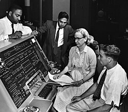

Grace Hopper a servi dans la marine américaine pendant la Seconde Guerre mondiale. C’est dans ce contexte qu’elle a pu travailler sur les premiers ordinateurs, qui étaient principalement utilisés par l’armée. Cette expérience lui a permis de participer au développement de l’informatique moderne.
Grace Hopper est à l’origine du premier compilateur. Un compilateur est un programme qui permet de traduire un langage informatique en un langage compréhensible par une machine. Cette invention a rendu la programmation beaucoup plus simple et accessible.

Grace Hopper a participé à la création du langage COBOL. Ce langage a été conçu pour être proche du langage humain, ce qui facilite son utilisation dans les entreprises.
Grace Hopper a profondément marqué l’histoire de l’informatique. Ses inventions sont encore utilisées aujourd’hui et ont permis de rendre les ordinateurs plus accessibles.
Page principale